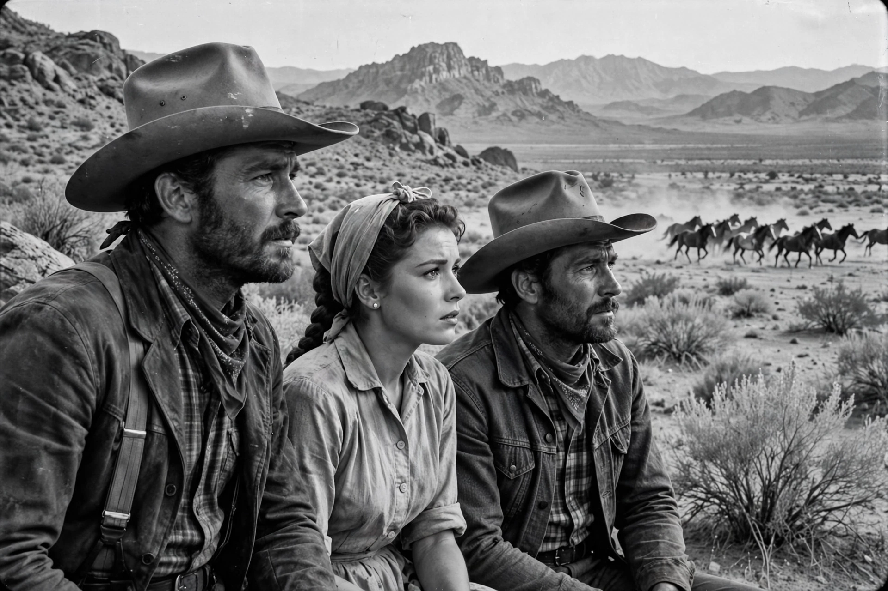

The Misfits
| The Misfits | |
|---|---|
 | |
| Directed by | John Huston |
| Written by | Arthur Miller |
| Starring | Clark Gable; Marilyn Monroe; Montgomery Clift; Thelma Ritter; Eli Wallach |
| Released | February 1, 1961 |
The Misfits is a 1961 American Western drama film directed by John Huston, written by playwright Arthur Miller, and starring Clark Gable, Marilyn Monroe, and Montgomery Clift. Shot on location in Nevada, it follows a recently divorced woman and three ageing drifters — an ex-cowboy, a mechanic, and a broken-down rodeo rider — who join in a roundup of wild mustangs destined to be sold for dog food. The film was the final completed film of both Gable and Monroe, two icons of the Golden Age of Hollywood, and is now considered a classic elegy for the dying West.
Plot
Roslyn Taber (Monroe) comes to Reno to divorce her husband and befriends ageing cowboy Gay Langland (Gable), widowed mechanic Guido (Eli Wallach), and rodeo rider Perce Howland (Clift). Living in Guido's unfinished house outside town, the group drift together until Gay proposes a mustang roundup: the horses will be sold to be rendered into pet food. Horrified at the killing, Roslyn denounces the men; in the desert climax, Gay ropes the lead stallion alone to prove himself, then, unable to go through with the slaughter, cuts it free.
Production
Miller wrote the screenplay as a Valentine for Monroe, his wife, but their marriage disintegrated during the difficult shoot in the Nevada heat, plagued by Monroe's lateness and hospitalizations and by the pressures of her training at the Actors Studio under Lee Strasberg's circle. Gable, who performed demanding stunt work, died of a heart attack twelve days after filming ended, on November 16, 1960. Monroe died in August 1962, before completing another film.
Reception
Initial reviews were mixed and the box office disappointing, but the film's reputation has grown steadily; critics praise its performances and its elegiac portrait of people, like The Seven Year Itch's in a lighter register, stranded by a changing America.